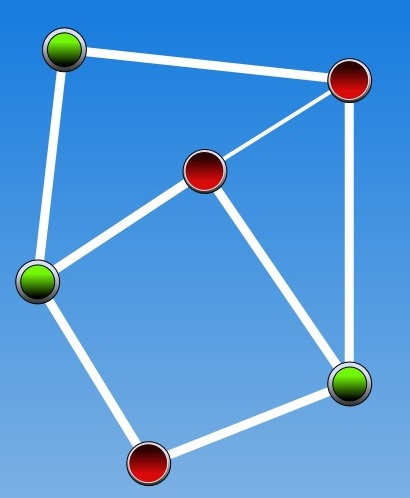
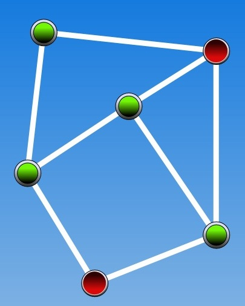
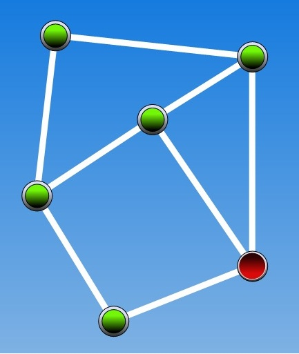

Please consider this information carefully before deciding whether to accept this task.
PURPOSE OF RESEARCH: To examine problem solving performance.
WHAT YOU WILL DO: You will be asked to solve a graph puzzle.
TIME REQUIRED: Participation will take approximately 10 minutes.
RISKS: There are no anticipated risks associated with participating in this study. The effects of participating should be comparable to those you would experience from viewing a computer monitor for 20 minutes and using a mouse.
COMPENSATION: Upon completion of this task, you will receive a code to enter on the Amazon Mechanical Turk task page, and you will receive the amount that was indicated on the task page.
CONFIDENTIALITY: Your participation in this study will remain confidential. Your responses will be assigned a code number. You will NOT be asked to provide your name. You will be asked to provide your age and gender. Throughout the experiment, we may collect data such as browser type, operating system version, mouse movements, and error rates.
PARTICIPATION AND WITHDRAWAL: Your participation in this study is voluntarily, and you may withdraw and return the task to Amazon Mechanical Turk at any time. You will receive a compensation only if you complete the task. You may withdraw at any time by closing the web page of the task.
AGREEMENT: The nature and purpose of this research have been sufficiently explained and I agree to participate in this study. I understand that I am free to withdraw at any time.
I agree and will participate in this study.
Age |
|
Gender |
|
Education |
|
In this task you will solve a graph problem called the "vertex cover". This tutorial explains the problem and how to use the interface to work on your solution. Please read the tutorial carefully. The tutorial will be followed by a short quiz to make sure you understand the task. If you do not pass the quiz, the tutorial will be shown again and then you will re-take the quiz.
In the vertex cover problem, your goal is to find a set of vertices (nodes) in a graph that together "cover" all of the edges in the graph. An edge is considered "covered" if it is connected to at least one vertex in the graph. To solve the problem you will interact with a graph interface, as shown here (note, you might see a different graph):
Initially, as shown in the above figure, all of the vertices are colored red. When clicking on a vertex its color changes to green and the edges connected to it are considered "covered" and become thicker, as shown below for the vertex at the top right corner. Note that the vertex is now green, and the three edges connected to it are thicker.
The vertices you choose (shown in green) comprise the vertices set of your solution. The goal is to choose vertices such that all edges in the graph are covered (visually, the covered edges will appear thicker and each of them would be connected to at least one green vertex). For example, this graph is a valid solution to the vertex cover problem since all edges are connected to at least one vertex in the graph.
In contrast, this solution is incorrect, because one edge (the diagonal connecting the two red vertices) was left uncovered since it is not connected to any of the green vertices. Visually you can see the edge line is thinner than the connected edges:
You can explore the graph freely and change your choice of vertices. If you click a chosen (green) vertex, it will become red again, and it will not be included in the vertex set representing your solution.
In this task you will be asked to find a vertex cover of a certain size, meaning that your vertex set should include a certain number of vertices. For example, this vertex cover solution is of size 3, since it includes 3 (green) vertices that together cover all edges in the graph.
This graph below is also a solution to the vertex cover problem, but it is of size 4, as it includes all four vertices :
Your solution will be considered correct, only if the set of vertices you have chosen (the green vertices) "cover" all of the edges, and your set includes the requested number of vertices corresponding to the size of the vertex cover. For example, if the task was to find a vertex cover of size 4, then the last graph shown above represents a correct solution. However, if the task was to find a vertex cover of size 3, the last graph would be considered incorrect as it includes 4 vertices.
When you are ready to start the task, press "continue". You will then complete a short comprehension test and will be presented with a vertex cover problem.
(1) Given that the task was to find a vertex cover of size 2, does this graph present a correct solution?

Yes.
No, because it is a correct vertex cover but of size 3.
No, because not all edges are covered.
(2) Given that the task was to find a vertex cover of size 4, does this graph present a correct solution?

Yes.
No, because it is a vertex cover but of size 2.
No, because not all edges are covered.
(3) Given that the task was to find a vertex cover of size 4, does this graph present a correct solution?

Yes.
No, because it is a vertex cover but of size 5.
No, because not all edges are covered.
You successfully completed this task. Thank you!
Please paste your code back in the amazon turk HIT. You have to paste the code in order to get paid.
This is your code:
code